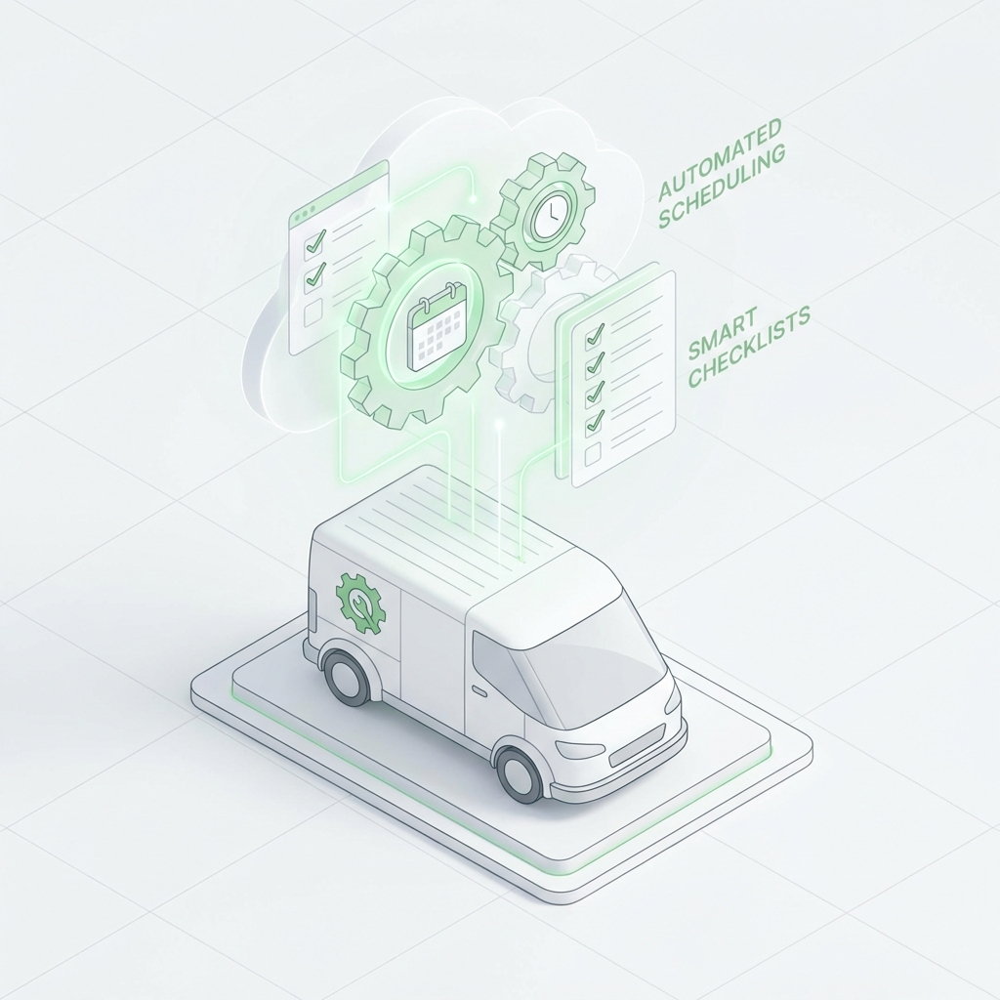

The Problem: Manual Processes Eating Up Profit
Marcus owns a successful pool cleaning and maintenance company with 5 technicians. While his technical work was excellent and customer satisfaction was high, he found himself working 60+ hour weeks—with almost 20 of those hours spent on administrative tasks rather than serving customers or growing the business.
"I'd finish a full day of client work, then spend 3-4 hours every evening doing paperwork," Marcus explained. "Scheduling appointments, sending invoices, following up on payments, sending reminders, updating customer records. It was exhausting and felt like I was running in place."
spent weekly on manual administrative tasks
The administrative burden was crushing Marcus's business in multiple ways:
- Lost billable time: 20 hours of admin work meant 20 fewer hours available for revenue-generating client services
- Delayed invoicing: Sometimes invoices went out 5-7 days after service, slowing cash flow significantly
- Scheduling conflicts: Double bookings happened 2-3 times monthly due to manual calendar management
- Inconsistent follow-up: Customer follow-ups were sporadic when Marcus was busy, hurting retention
- Owner burnout: Working evenings and weekends on paperwork was unsustainable
At $125/hour for billable work, those 20 administrative hours represented $2,500 in lost revenue weekly, or approximately $130,000 annually. The business was profitable, but it was far from optimized.
The Solution: Comprehensive Workflow Automation
After consulting with automation specialists, Marcus implemented an integrated system that automated his most time-consuming manual processes. The goal wasn't to eliminate the human touch—it was to free Marcus from repetitive tasks so he could focus on high-value activities.
Implementation Timeline
The automation rollout happened in phases over 3 weeks:
- Week 1: Scheduling automation and calendar management system
- Week 2: Invoicing automation and payment processing integration
- Week 3: Customer communication workflows and follow-up sequences
Automated Systems Implemented
1. Intelligent Scheduling System
The new system completely transformed how appointments were managed:
- Customers can self-book appointments through a branded booking page
- Real-time calendar syncing prevents double bookings automatically
- Automatic buffer times between appointments for travel and prep
- Smart routing that groups appointments by geographic area
- Automated confirmation emails and SMS reminders at 48h and 24h before appointments
- Easy rescheduling for customers through a secure link
- Automatic waitlist management when preferred times are full
2. Automated Invoicing and Payment Collection
Invoice generation and payment collection became seamless:
- Invoices automatically generated immediately upon job completion
- Sent via email and SMS within minutes of finishing service
- Integrated payment processing with one-click payment for customers
- Automatic payment reminders at 3, 7, and 14 days for unpaid invoices
- Recurring billing setup for regular maintenance contracts
- Automatic late fee calculation and application based on terms
- Real-time payment notifications to Marcus's phone
3. Customer Communication Workflows
Customer touchpoints became consistent and professional:
- Welcome sequence for new customers with helpful information
- Automatic post-service follow-up asking about satisfaction
- Birthday and anniversary messages for relationship building
- Seasonal service reminders based on customer history
- Automated review requests after successful service completion
- Reactivation campaigns for customers who haven't booked in 90+ days
The Results: Transformed Business Operations
saved per week on administrative tasks
First Month Results
The impact was immediate and measurable:
- Administrative time reduced from 20 hours to 2 hours weekly - Marcus only handles exceptions and complex situations
- 14 additional billable hours weekly - that's $1,750/week in additional revenue capacity
- Zero double bookings - the automated system eliminated scheduling conflicts entirely
- Invoice turnaround from 5-7 days to instant - dramatically improving cash flow
- Payment collection time reduced by 42% - from average 23 days to 13 days
- No-show rate dropped from 15% to 4% - automated reminders kept appointments top-of-mind
90-Day Results
After three months, the compounding benefits became clear:
- $21,000 additional monthly revenue from reclaimed billable hours
- 28% improvement in cash flow from faster invoice payment
- 19% increase in repeat customer rate from consistent follow-up
- 156% ROI on the automation investment in just 90 days
- Customer satisfaction scores up 23% due to professionalism and reliability
ROI within first 6 months of automation implementation
Unexpected Benefits That Changed Everything
Beyond the obvious time savings, Marcus discovered transformative advantages he hadn't anticipated:
1. Better Work-Life Balance
"I leave work at 5 PM now and don't think about the business until morning," Marcus shared. "No more evening paperwork sessions. I have dinner with my family and actually have energy for my personal life. This alone was worth the investment."
2. Ability to Scale the Business
With systems in place, Marcus hired two additional team members without increasing administrative burden. "The systems handle everything automatically regardless of team size. I can grow revenue without proportionally growing overhead."
3. Professional Image Enhancement
Customers noticed the difference. "The instant invoices, automatic reminders, and consistent communication make us look like a much larger, more established company," Marcus noted. "We've won contracts against bigger competitors because our systems are actually better."
4. Data-Driven Decision Making
The automated systems generate reports Marcus never had time to create manually. "I know exactly which services are most profitable, which customer segments respond best to different marketing, and where to focus my growth efforts. I'm making decisions based on data instead of gut feel."
Customer Response
Customers loved the automated experience:
"I booked online at 11 PM when I was thinking about it, got instant confirmation, received a reminder the day before, and got my invoice emailed to me immediately after service. I paid it on my phone in 30 seconds. This is how all service businesses should work." - Robert T., Customer
"The professionalism is impressive. Everything is documented, communication is clear, and I never have to wonder about appointment times or payment status. It's refreshing." - Linda K., Customer
Implementation Lessons for Other Businesses
Marcus shared his key learnings for other pool cleaners & maintenance businesses considering automation:
- Start with your biggest pain point - Don't try to automate everything at once. Marcus started with scheduling because that was causing the most problems.
- Map your current processes first - Document exactly what you do manually before automating. This helps identify what's essential vs. what's just habit.
- Choose integrated tools - Systems that connect together work better than disconnected point solutions. Everything should flow seamlessly.
- Maintain the human touch where it matters - Automate routine tasks, but keep personal interaction for relationship-building moments.
- Test thoroughly before full launch - Run the automation in parallel with manual processes for a week to catch any issues.
- Train your team on the new systems - Everyone needs to understand how the automation works and when to intervene manually.
- Monitor and optimize continuously - Review automation performance monthly and adjust workflows based on results.
- Use the saved time strategically - Don't just let it disappear. Deliberately allocate it to revenue-generating or business-building activities.
The Financial Reality: Numbers That Matter
Marcus provided his actual financial breakdown to help other business owners evaluate the investment:
- Monthly automation cost: $850 (scheduling, invoicing, CRM, communication tools)
- Previous manual process cost: 20 hours × 4 weeks × $125/hour = $10,000 in opportunity cost monthly
- Time reclaimed for billable work: 18 hours weekly = 72 hours monthly
- Additional monthly revenue from billable time: 72 × $125 = $9,000
- Improved cash flow value: ~$3,500 monthly from faster payment collection
- First 6-month additional revenue: $54,000
- First 6-month automation cost: $5,100
- Net benefit first 6 months: $48,900
- ROI after 6 months: 156%
The Bottom Line for Service Business Owners
Manual administrative processes don't just waste time—they actively limit business growth and owner quality of life. Every hour spent on repetitive tasks is an hour not spent serving customers, developing your team, or actually enjoying the business you built.
Marcus's transformation shows that automation isn't about removing the human element from your business. It's about removing the repetitive work that prevents you from being human where it actually matters—in your customer relationships, your strategic thinking, and your personal life.
"Looking back, I can't believe I spent years doing things manually," Marcus reflected. "I thought I was too small to benefit from automation, or that it would be too expensive or complicated. The truth is I was too small to NOT automate. The business was constrained by my capacity to handle paperwork. Now it's constrained only by market demand."
monthly automation cost vs. $9,000+ in reclaimed billable time value
Key Takeaway
Service businesses waste massive amounts of owner time on repetitive administrative tasks. Comprehensive workflow automation reclaims this time for revenue-generating activities while improving customer experience, cash flow, and owner quality of life. The ROI is immediate and the impact is transformative.
Ready to automate your business?
Let's discuss how we can implement workflow automation for your pool cleaners & maintenance business.
Get Started TodaySources & References
This case study is based on real experiences shared by service business owners and industry research. The specific business details have been adapted to protect privacy while maintaining accuracy of results and methods.